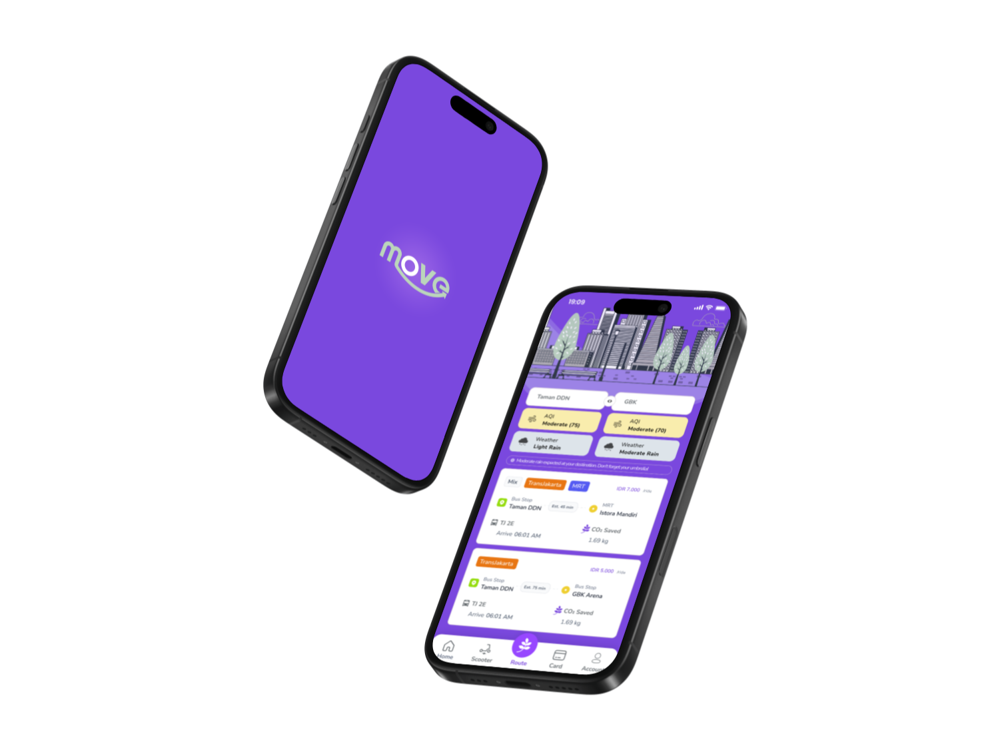
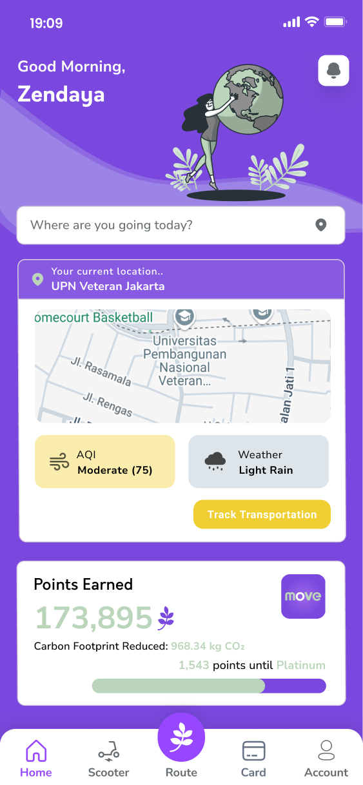
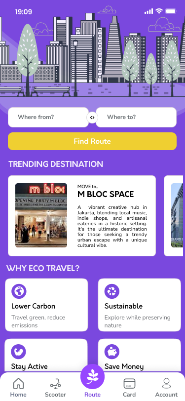
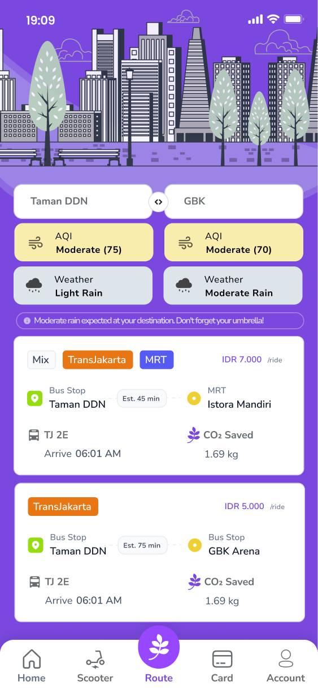
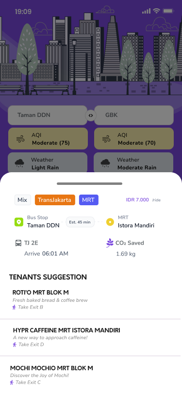
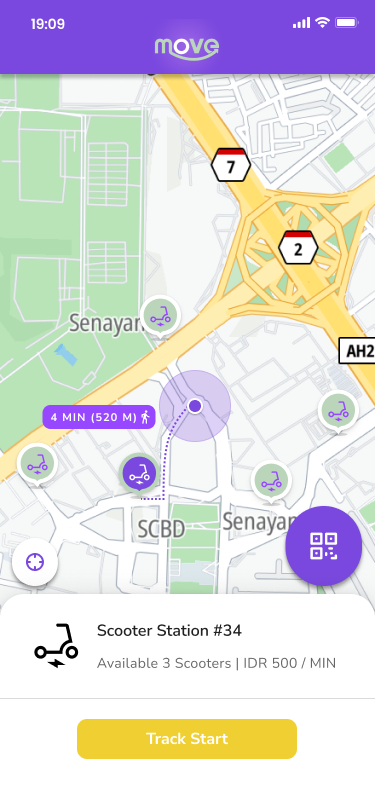
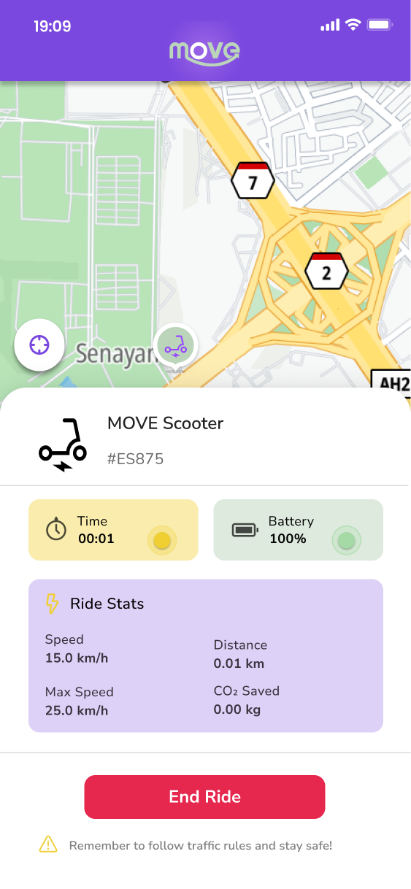
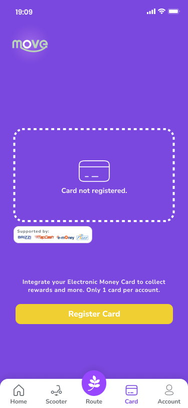
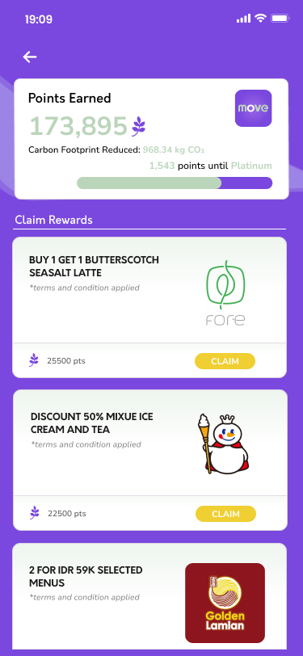

MOVE
Public transport application designed to revolutionize urban transportation.
- Role
- UI/UX Designer
- Timeline
- October 2024
- Stack
- Figma · Canva · Maze
- Outcome
- Best Mobile App Design, VWO 2024

About the project
Move is a mobile app designed to make public transport easier to use. Right now, many public transport services are not connected to each other, so planning a trip can take effort. Move puts them together in one app. Users can pick a route with different transport options, check the weather and air quality at their destination, rent an electric scooter, and link their e-money card. The app also shows how much carbon each trip saves, and users earn points they can redeem every time they tap in on public transport.
The challenge
The biggest challenge was that Move depends on data from many different sources, such as BMKG and transport operators like KAI, MRTJ, and Transjakarta, and each of them uses different systems. On top of that, the app had to suggest routes that balance travel time and carbon emissions, which is not always the same thing. We also had to think about battery use, since features like navigation and real-time route analysis can drain a phone quickly. Designing the app meant keeping all these features clear and simple for the user while knowing what was happening behind the screen.
How we worked
- Identified the problem. Public transport that is not connected, little attention to public transport users, and poor air quality caused by private vehicles.
- Defined user needs. Identified the need for easier access to public transport and clear information about carbon emissions.
- Defined the solution and goals. Proposed an integrated app that connects public transport with services such as e-money and scooter rentals.
- Planned the key features. Outlined features including route recommendations, weather and air quality information, ticket purchases, scooter rentals, and rewards.
- Conducted SWOT analysis. Evaluated the app’s strengths, weaknesses, opportunities, and threats, then developed strategies based on the findings.
- Identified technical challenges. Anticipated potential challenges involving data integration, power consumption, and route optimization.
- Designed the UI and prototype. Built the design system, including colors, fonts, buttons, text fields, and navigation bar. Designed the screens and created a clickable prototype.
- Conducted usability testing. Tested the prototype using Maze to evaluate the user experience and identify areas for improvement.
What we designed
- Homepage: The first screen shows the air quality index and weather at the user’s current location, along with their points balance. Users can see the most important information as soon as they open the app.
- Place Recommendations: Move suggests places for users to visit, so they can pick a destination and plan the trip in the same app.
- Route Planner: Users enter their start point and destination, then compare public transport options. This page also shows the air quality index and weather at both locations, so users know what to expect before they leave.
- Carbon Tracker: Every recommended route shows how much CO₂ the user saves. Users can compare routes and see the environmental impact of each choice.
- Find a Scooter: This page shows where electric scooters are available, so users can find the nearest one and start a short trip.
- Scooter in Use: Once a scooter is rented, users get a detail page for their ongoing ride, so they can follow the rental in one place.
- E-Money Integration: Users link their e-money card to the app. This connects their tap-ins on public transport to the rewards they earn.
- Rewards: Users can see the list of rewards available and redeem their points. This gives people a small reason to keep choosing public transport.








Outcome
Move won Best Mobile App Design at Vocational Worldwide Olympiad 2024, an international competition held by BEM Vokasi Universitas Indonesia, where we competed against 18 teams from 3 countries.
Try the interactive prototype here ↗, and explore the full project in the pitch deck ↗.
What's next
Let’s work together.
I’m open to UI/UX design roles and collaborations. Let’s talk about how I can contribute.